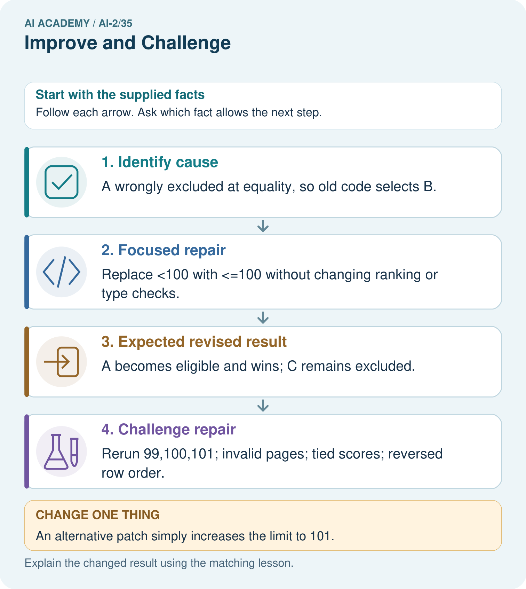

AI Academy · Level 2 · Grade 7 · Week 35 · Workbook
Improve and Challenge
Learn to understand, design, build, test and explain AI systems responsibly.
Project: Transparent Book Recommender
Workbook · 1 of 25
Recall and choose your starting point
Try the recall before opening notes. Then use a different colour or a labelled second line to correct your explanation.
Test Diverse Users
Without opening the old lesson, explain one key idea from Test Diverse Users. Give an example and a mistake that the idea helps you avoid.
Project Problem and Success Test
Without opening the old lesson, explain one key idea from Project Problem and Success Test. Give an example and a mistake that the idea helps you avoid.
Evidence and Sources
Without opening the old lesson, explain one key idea from Evidence and Sources. Give an example and a mistake that the idea helps you avoid.
Workbook · 2 of 25
Practise with fading help
Use W2: Test neighbors for Improving without hiding failures. Record the answer once; the lesson and workbook refer to the same attempt.
| Given inputs | Procedure I chose | Middle steps | Result and check |
|---|---|---|---|
Workbook · 3 of 25
Individual reasoning check
Use the worked case for Improving without hiding failures. Proposed explanation: “A successful run proves the conclusion”. Decide whether this explanation is supported. Point to the step or supplied fact that decides; explain your repair if needed.
Workbook · 4 of 25
Independent transfer case
Independent case: Repair independently
Write the eligibility predicate for at most 12 minutes and a regression set including 11,12,13 and 0. Add one chooser tie case and one invalid-data case to rerun.
Attempt this case before feedback. Record any help. Earlier examples below are further practice; a case already practised with feedback cannot establish fresh transfer.
Workbook · 5 of 25
Your learning target
After a scoring change, four old failures pass but two previous passes fail. On the original ten cases there were six passes. Compute the new total and explain what else should be reported.
Workbook · 6 of 25
Solve the given case
A repair raises success from 7/10 to 9/10 on the same validation set.
What belongs in the improvement claim?
Show your trace, calculation or evidence
Workbook · 7 of 25
Check a changed case
After changing a scoring weight, the system fixes one request but breaks two previously correct ones. What should the improvement record say?
My independent answer and reason
Week 35 Test and reflect
Workbook · 8 of 25
Design a revealing test
Create a changed input, boundary case or missing-information case. Write the expected answer or safe response before testing.
| Test record | My evidence |
|---|---|
| Changed input or condition | |
| Expected answer or fallback | |
| Observed result | |
| Why the result occurred |
Workbook · 9 of 25
Project checkpoint
Publish the cause, one change, fixed test set, before/after evidence, and remaining limitation.
The project change and evidence I will keep
Workbook · 10 of 25
Self check
I can explain the mechanism. I can show evidence. I can handle a changed case. I can name a limit. Mark each as not yet, with help or independently, and attach supporting work.
Teacher review ____________________ Next step ____________________
Workbook · 11 of 25
Transfer practice from the original programme
After a scoring change, four old failures pass but two previous passes fail. On the original ten cases there were six passes. Compute the new total and explain what else should be reported.
Record support used: none, hint or teacher explanation.
Workbook · 12 of 25
W1 Locate the cause
Why does minutes < limit reject a valid exactly-at-limit activity?
Workbook · 13 of 25
W2 Test neighbors
For limit 15, give expected eligibility at 14, 15 and 16.
Workbook · 14 of 25
W3 Reject a bad fix
A proposed fix accepts minutes <= limit + 1. Give a counterexample at limit 15.
Workbook · 15 of 25
W4 Repair independently
Write the eligibility predicate for at most 12 minutes and a regression set including 11,12,13 and 0. Add one chooser tie case and one invalid-data case to rerun.
Workbook · 16 of 25
W5 Write the change log
Record the bug, change, evidence and one remaining limit without claiming all bugs are gone.
Workbook · 17 of 25
Testing functions and interfaces — W1 Choose test scale
Classify testing score(3,2) versus running raw rows through the whole chooser.
Workbook · 18 of 25
Testing functions and interfaces — W2 Calculate an oracle
What expected score should a test use for fun 4 and learning 3?
Workbook · 19 of 25
Testing functions and interfaces — W3 Repair a weak test
A test compares recommend(items,10) to itself. Replace it with a useful assertion.
Workbook · 20 of 25
Testing functions and interfaces — W4 Test independently
Design an integration fixture: A valid (minutes 10, fun 2, learning 4), B valid (10,3,2), C invalid (5,9,1), limit 10. State winner, counts and a reversed-order expectation.
Workbook · 21 of 25
Testing functions and interfaces — W5 Cover absence
What expected result should an empty-input integration case specify?
Workbook · 22 of 25
Feedback, return check and learning record
| Evidence | My record |
|---|---|
| Worked alone / hint / model | |
| First step I repaired and why | |
| New case checked later; date and result | |
| What I can now explain without notes | |
| One remaining question |
Revisit this idea with your teacher after a delay. Familiarity is different from explaining and using it on a changed case.
Workbook · 23 of 25
Pictorial case practice: Improve and Challenge
A fictional recommender excludes books at an intended including equality page limit.
Contract: pages<=100; highest interest; ties choose smaller ID. Old code uses pages<100.
Rows A pages100 interest5; B pages90 interest3; C pages101 interest5.

Why are tests at both 100 and 101 needed?
Support used: alone / hint / worked example. This record is practice evidence.
Project connection: For each recommender revision, retain cause, code change, targeted test, regression results and unresolved issues.
Workbook · 24 of 25
Project portfolio milestone
Project: Transparent Book Recommender
Current milestone: Present and defend. Demonstrate the system, explain one failure and justify the next improvement with evidence.
For each recommender revision, retain cause, code change, targeted test, regression results and unresolved issues.
| Evidence to keep | My record |
|---|---|
| This week’s input and deciding step | |
| Prediction and actual result (or labelled paper trace) | |
| One change since the previous checkpoint and why | |
| One error or limit and the next test |
Workbook · 25 of 25
Supported practice and learning evidence
Use this supported practice once, in the browser or on paper. Keep the reserved independent assessment for a separate first attempt before teacher feedback.
A fictional recommender excludes books at an intended including equality page limit.
Practice 1: explain the deciding evidence
Which labelled step matches this detail? Rerun 99,100,101; invalid pages; tied scores; reversed row order.
1. Identify cause
2. Expected revised result
3. Challenge repair
4. Focused repair
Hint if needed: Read the steps in the pictorial case. Match the supplied detail to the stage that performs or records it.
After your attempt, compare with the supported explanation: Challenge repair Rerun 99,100,101; invalid pages; tied scores; reversed row order. A focused change makes the claim about what caused the error testable: the equality comparison rule caused this specific failure. Regression tests check surrounding behavior that should remain unchanged. A tie case and reversed input order are necessary because a correct boundary does not ensure deterministic selection. Log the old failure and revised replay separately.
Practice 2: explain the deciding evidence
Changed-case practice: An alternative patch simply increases the limit to 101. Which conclusion is supported by the supplied facts?
1. We can decide the result without examining the changed input or the procedure.
2. This one example guarantees correct results for every future input.
3. C is wrongly admitted as well as A.
Hint if needed: Use the changed condition and the deciding step in the pictorial trace. The answer must say what follows from those facts.
After your attempt, compare with the supported explanation: C is wrongly admitted as well as A. Changing the maximum alters the contract instead of repairing its comparison.
Repair a missing building block
Review Test Diverse Users (ai-2/34). Goal: Evaluate across varied cases. Short practice: Can these records establish performance for different user groups?. Return to this week and explain what you changed.
Review Project Problem and Success Test (ai-2/32). Goal: Define a small application purpose. Short practice: Write an equality test and explain which requirement it checks.. Return to this week and explain what you changed.
Review Evidence and Sources (ai-2/29). Goal: Explain the mechanism and terminology of claim support and citation evaluation. Short practice: Why is the original answer not fully supported despite having citations on every claim?. Return to this week and explain what you changed.
Predict, run and debug
The browser lab lets you edit the supported Python examples already included in this lesson. Predict first, run, inspect the actual output or error, change one input, then run again. Keep code, predictions, actual results and a reasoned revision together. On paper, label your result as a trace rather than an execution.
Keep your completed work
Use Download completed work in the hosted lesson to export your answers, reflections, practice feedback and code-run evidence. Open the HTML copy to read or print it. Drafts stay in this browser when storage is available; clear drafts on a shared device.